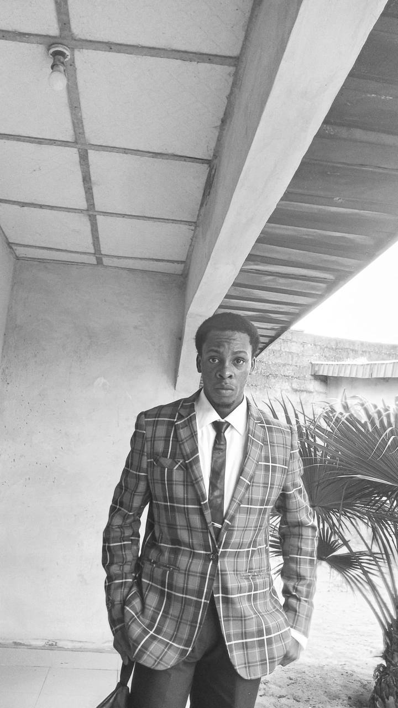
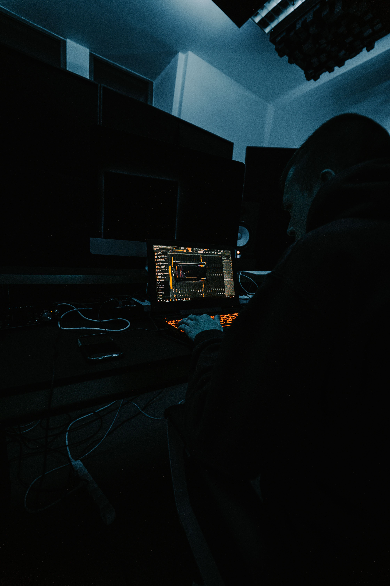
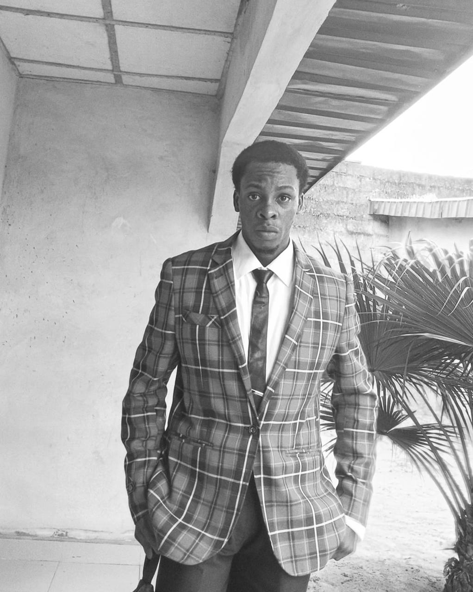

Fortune.Full-Stack Developer, Software Engineer & Cybersecurity Analyst.
I turn ideas into functional, secure and scalable digital products. From the first pixel to the backend architecture, I build software that solves real problems.


Building, learning, and shipping.const fortune = { role: "software engineer", focus: ["full-stack", "AI", "cybersecurity"], location: "Uyo, Nigeria", curious: true, available: true, philosophy: "build with purpose" };Find me on GitHub
Let’s connect.
Find me online.
Open to opportunities
Building something?
Let’s ship it.
From the first pixel to the last API, I’m ready to help turn your next idea into a working product.
Start a projectAbout me

I’m Fortune.
I’m a software engineer based in Uyo, Nigeria, passionate about building useful, reliable and secure digital products.
I enjoy turning ideas into real applications, from intuitive interfaces to backend systems, databases, APIs and the infrastructure that keeps everything running. My interests span full-stack development, AI-powered applications and cybersecurity.
Great software should not only work. It should be thoughtful, secure, maintainable and useful to the people who depend on it.
I build the whole thing. Then I make it better.
I like working across the whole software lifecycle: understanding the problem, designing the experience, building APIs, managing databases, implementing security and deploying. The best engineers understand problems, communicate clearly and take responsibility for the systems they build.
The toolbox
Everything connects.
The technologies I use are one system: the interface people touch, the backend behind it, the intelligence on top and the infrastructure underneath.
Selected work
Products built for the real world.
Digital products, platforms and experiments that show how I approach engineering problems.
Services
Intelligence with a purpose.
I help turn ideas into working digital products through thoughtful engineering and practical problem-solving.
Let’s build something
What are you building?
Whether you’re building a startup, improving a product, or hiring a software engineer, let’s start a conversation.
Uyo, Nigeria · Remote worldwide